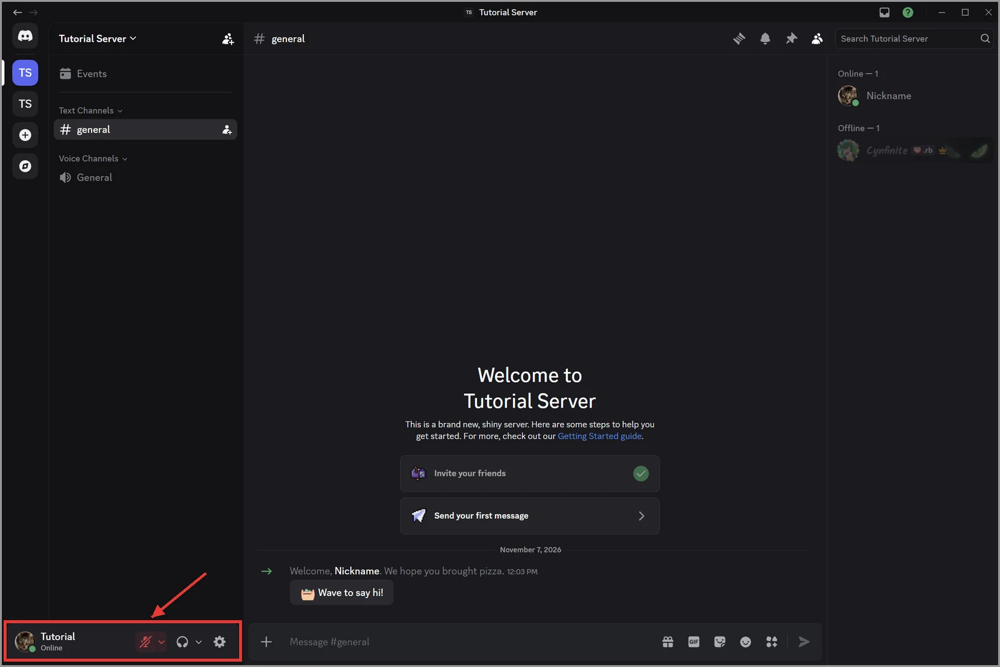
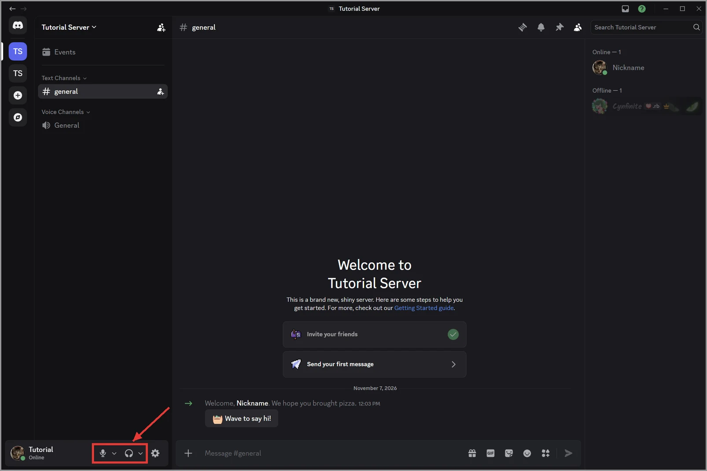

4.3 Your User Panel
The user panel sits at the bottom of the channel list. It shows your picture and name and three buttons that control your sound and settings.

The three buttons
| Button | What it does |
|---|---|
| Microphone | Click it to mute or unmute your microphone. A red line through the icon means you are muted. |
| Headphones | Click it to deafen or undeafen yourself. A red line through the icon means you hear no sound. |
| Gear | Opens User Settings, where you change your profile, language, and text size. |
Muting compared with deafening
Muting turns off only your microphone, so you can still hear your group. Deafening turns off all sound in Discord and also mutes your microphone. Before a meeting, check that neither button has a red line through it.
